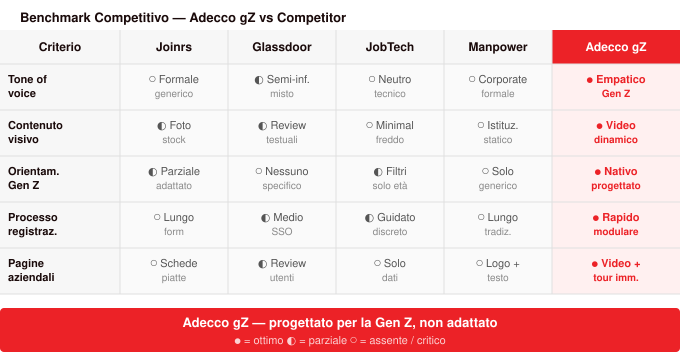
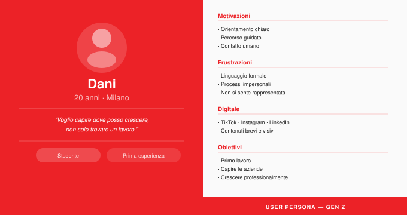
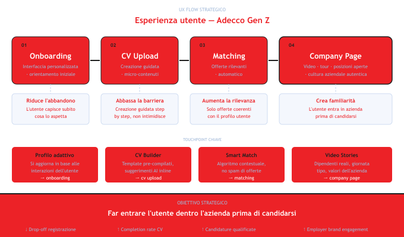

UX Research · Strategy · Content Design
Come si conquista la fiducia di una generazione che non si fida dei processi impersonali? Ricerca, strategia UX e contenuto al servizio della connessione.
Contesto
La sfida non era tecnica — era relazionale. I giovani tra i 18 e i 26 anni arrivano sul sito, guardano, e vanno via. Non perché non cerchino lavoro, ma perché non si sentono nel posto giusto: il linguaggio è troppo formale, i processi sembrano pensati per qualcun altro, e il contatto umano è quasi assente.
Adecco gZ nasce per rispondere a questa distanza — ripensare l'esperienza digitale per un target spesso trascurato dalle piattaforme tradizionali, rendendo il primo approccio al mondo del lavoro più chiaro, coinvolgente e umano.

Ricerca
Ho condotto un'analisi approfondita del comportamento digitale della Gen Z e delle loro frizioni con il mondo del lavoro — non come segmento demografico, ma come persone con bisogni concreti e aspettative precise.

Insight chiave
La Gen Z non è difficile da ingaggiare — è difficile da ingannare. Vuole tono motivazionale ma autentico, contenuti brevi e visivi, e soprattutto la percezione di un contatto umano reale. L'utente ha bisogno di essere guidato passo dopo passo, non abbandonato in un sistema pensato per altri.
Strategia UX
Ho progettato un'esperienza step-by-step che trasforma la candidatura da azione burocratica a percorso immersivo. Ogni momento del flusso è pensato per ridurre l'ansia, costruire fiducia e avvicinare l'utente all'azienda prima ancora del colloquio.
Framework: Awareness → Onboarding → Candidatura → Matching → Fiducia


Soluzione
La soluzione non è stata solo una nuova interfaccia — è stato un sistema editoriale pensato in ottica UX. Un piano di 48 contenuti in 3 mesi, divisi in 4 aree tematiche: mondo del lavoro, valori aziendali, nuove tecnologie, formazione.

Candidatura
Ho riprogettato la pagina di offerta di lavoro per renderla meno burocratica e più umana. Meno requisiti in lista, più contesto sull'ambiente di lavoro. Il linguaggio è diretto, il tono inclusivo, la struttura pensata per chi legge da mobile in 30 secondi.

Pagina azienda
Ho progettato la company page come uno spazio narrativo — non una lista di benefit, ma una finestra su come si lavora davvero. Contenuti generati dall'azienda stessa, recensioni reali, video di team. Fiducia costruita prima ancora del colloquio.

Homepage
La nuova home di Adecco gZ è pensata per il primo impatto. Niente form subito, niente jargon HR. Solo un messaggio chiaro sul perché vale la pena restare — e un percorso guidato verso il primo passo.

Risultati
Learnings
Next Step
Prossimo progetto